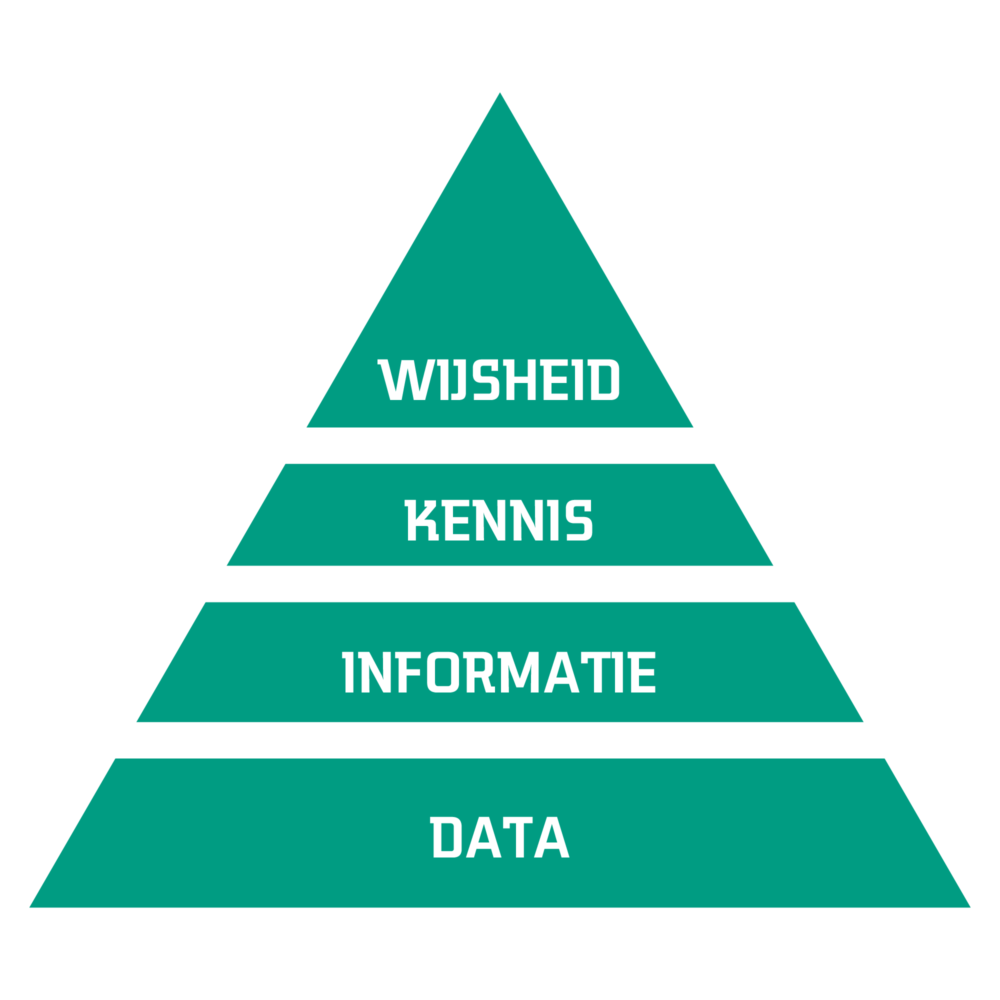

3 Toekomst: Grenzen vervagen
Samenvatting
Hoe ver gaan we met AI? Met wat fantasie kunnen we allerlei innovaties bedenken en zelfs verwachten dat AI slimmer wordt dan mensen. Voordat we zover komen, zijn er nog vele onderwerpen die onderzocht moeten worden. Het meest belangrijke is dat we onszelf de vraag stellen wat we willen bereiken met AI, en wat ons mens maakt. AI kunnen we zien als een goede samenwerkingspartner als we hier zelf slim mee omgaan.
Maar hoe dan verder? Wat valt er te verwachten van AI de komende jaren en zelfs decennia? Komen we in een winter terecht, of beginnen hierna de zomerdagen van AI? Koffiedik kijken kent risico’s, en ik zal me niet wagen aan concrete voorspellingen voor de jaren hierna. Wel belicht ik hieronder verwachtingen die anderen hebben, en durf ik het aan om te speculeren over de relatie tussen mens en machine.
3.1 Oneindige technologische groei?
Ik benoemde eerder al dat mensen onlosmakelijk verbonden zijn met technologie. Vanaf het moment dat we bepaalde gereedschappen (tools) zijn gebruiken, hebben we ons verder kunnen ontwikkelen en heeft onze evolutie sindsdien veel meer mentaal dan fysiek plaatsgevonden (Dennett, 2017). Van een paar miljoen jaar geleden tot nu zijn er veel uitvindingen gedaan, van stenen bijlen tot quantumcomputers. Als we deze historie bekijken zien we echter ook een patroon. Technologie versnelt. Dat wil zeggen: uitvindingen van nieuwe gereedschappen en vorderingen in technologie lijken elkaar steeds sneller op te volgen. Er zit bijvoorbeeld minder tijd tussen het kunnen gebruiken van elektriciteit (1825, de electromagneet) en de eerste digitale computer (1941, de Z3 (Rojas, 1997)), dan tussen de start van de Bronzen en IJzeren Tijdperken (3.300 en 1.200 voor Christus). De technologische groei zien we bijvoorbeeld ook in de industriële revoluties: rond het jaar 1800 maakte de industrie automatisering door. Allerlei processen in de maakindustrie konden plotseling veel sneller plaatsvinden. Daarna kwamen een revolutie rond het jaar 1900 dankzij communicatienetwerken en het gebruik van elektriciteit. De derde revolutie in deze lijn kwam dankzij digitale computers in de tweede helft van de 20e eeuw. En nu, in de vierde industriële revolutie, draait het om de verbinding van de analoge met de digitale wereld dankzij vakgebieden als het Internet of Things (IoT) en AI (Lasi e.a., 2014).
Kijkend naar de afgelopen vijftig jaar zien we ook dat het gebruik van computers duidelijk is toegenomen. Over de hele wereld gebruikte in 2023 ongeveer 69% van de bevolking smartphones.1 Als we denken aan de bevolkingsgroei van onze planeet, zien we ook dat dat sneller en sneller gaat. Voor computerchips geldt eenzelfde soort groei volgens de Wet van Moore: het aantal transistoren op chips verdubbelt iedere twee jaar (Wikipedia contributors, 2024a). Dit is gegroeid van 2.300 transistoren in de Intel 4004 (1971) naar 7,5 miljoen transistoren in de Pentium II (1997) tot meer dan 100 miljard transistoren in de Ryzen EPYC (2024).
Dit soort groei wordt exponentieel genoemd: hoe groter iets wordt, hoe sneller het groeit. Dit is een lastig te overzien patroon. Mensen kunnen lineaire groei prima begrijpen, maar exponentiële groei is lastiger om te bevatten. Als het gras in een tuin iedere week vijf centimeter groeit, snappen we snel wanneer we moeten maaien om er nog overheen en niet doorheen te lopen. Als het gras exponentieel zou groeien, en iedere week zou verdubbelen in lengte, dan zou gras van 5 cm na een maand 80 cm lang zijn en na een jaar iets meer dan 225 miljard kilometer.2 Andersom gedacht, als een vijver na een maand voor 10% is dichtgegroeid met planten, en deze planten verdubbelen iedere dag, hoe lang duurt het dan nog voor de vijver overvol zit? Slechts vier dagen.3 Hoeveel tijd er daarvoor is gespendeerd aan die verdubbeling in groei is niet belangrijk en daardoor kan iets wat schijnbaar klein is onverwacht snel groot worden.
Deze versnellende snelheid van technologie wordt door sommigen gezien als iets dat gaat leiden tot een technologische singulariteit. Als onze computers steeds sneller worden en technologieën zoals AI zich ook sneller ontwikkelen, wat gebeurt er dan op een gegeven moment? Een explosie van intelligentie, dankzij machines die zelf leren en zichzelf verbeteren. Intelligentie is een ruim begrip, en zien we dat computers op bepaalde vlakken al intelligenter zijn dan mensen. Allicht gaat de discussie dan ook meer over Artificial General Intelligence (AGI): generieke artificiële intelligentie. AGI betekent dat deze kunstmatige intelligentie niet louter één taak beter kan dan mensen, maar verschillende taken, en op een hoger niveau van begrip, waardoor deze kan leren van diens eigen ervaringen.
De explosie van intelligentie is een hypothese van verschillende wetenschappers (Chalmers, 2016; Good, 1966; Vinge, 1993). Deze singulariteit is een punt in de tijd waarna ontwikkelingen niet meer voor te stellen zijn, omdat deze gedreven zullen zijn door bovenmenselijke intelligentie.4 Een ander, vaak aangehaald werk hierover, komt van Ray Kurzweil, die inschatte dat deze gebeurtenis in 2045 zal plaatsvinden (Kurzweil, 2005). Al deze verwachtingen zijn gebaseerd op een interpretatie van exponentiële groei, en met name dat deze niet stopt. Hoe en of zulke super-intelligentie gaat ontstaan wordt onderbouwd met argumenten die uitgaan van betere hardware en software. In andere woorden: snellere computers of efficiëntere algoritmes. Kritiek op de singulariteit hierop is legio, zelfs van Moore, wiens wet vaak wordt aangehaald (IEEE Spectrum, 2008). Vraagtekens worden geplaatst bij het patroon van exponentiële groei, want het is niet zeker of deze zo doorgaat of afvlakt.
Mijn mening over de singulariteit is dat we niet van tevoren dienen uit te sluiten dat het mogelijk is. Dat is net zo kwalijk als met volkomen zekerheid zeggen dat het wel gebeurt. Wat volgens mij belangrijker is, is onze houding ten opzichte van dit idee en hoe we omgaan met ontwikkelingen van AI. Los van de praktische tegenargumenten op basis van technologie waar we nu beeld van hebben, kunnen we ook theoretisch kijken naar de mogelijkheden en uitdagingen van het ontstaan van super-intelligentie (Bostrom, 2015). Wat iedere intelligente ‘levensvorm’ aanjaagt zijn doelen als zelfbehoud en het nastreven van een bepaald ‘nut’. Dat laatste is wederom een groot onderwerp, maar voor veel levensvormen draait het om het behouden van de soort en dus reproductie. Wat een hypothetische AI als nut inziet, is wellicht wat die AI al dan niet bewust initieel wordt meegegeven. Een infameus gedachte-experiment hierover verhandelt over een paperclip maximizer wiens doel het is om zoveel mogelijk paperclips te maken (Bostrom, 2020). Met een beetje AI in dat systeem besluit het dat mensen wel eens dit doel in gevaar kunnen brengen en dat mensen gemaakt zijn van atomen waarmee paperclips gemaakt kunnen worden. De gevaarlijke conclusie van dat verhaal is duidelijk en niet bedoeld om schrik aan te jagen, maar om bewustzijn te creëren over ethische risico’s van het inzetten van technologie waarvan de gevolgen niet bekend zijn.
Voordat we zo ver vooruitblikken, lijkt het mij verstandig om eerst te kijken welke onderzoeksinnovaties nu gaande zijn. Het is goed om verder vooruit te kijken, maar ook om de blik op de grond voor ons te hebben.
3.2 De horizon van AI
In de vorige sectie haalde ik speculaties aan over de richting waarin AI uiteindelijk zou kunnen groeien. Voordat we die horizon bereiken, is het goed om naar de kortere termijn te kijken. AI als vakgebied staat duidelijk niet stil. De generatieve AI die de afgelopen jaren aandacht krijgt kwam niet uit de lucht vallen; hieraan werd al jaren gewerkt. De taalmodellen van onder andere ChatGPT zijn gebaseerd op werk uit 2017 over de specifieke deeplearning-architectuur transformers (Vaswani e.a., 2017). De plaatjesgeneratoren komen voort uit onderzoek naar generative adversarial networks uit 2014. Hierin worden twee AI-modellen tegenover elkaar gezet, de een om nieuwe plaatjes te genereren op basis van een dataset, de ander om te beoordelen of deze plaatjes behoren tot de originele dataset. Gaandeweg worden beide modellen steeds beter in hun taak, met als resultaat een goede plaatjesgenerator (Goodfellow e.a., 2014; Reed e.a., 2016).
De vraag is natuurlijk of we nu ook kunnen bepalen welke van zulke innovaties de komende vijf á tien jaar een evengrote rol gaan spelen. Het veld van AI is breed, dus ik zal zeker niet alles kunnen benoemen. Wat ik belangrijk vind, zijn zaken die raken aan een veranderend perspectief op AI. Ten eerste twee nieuwe manieren om naar data kijken.
Data is een voedingsbron voor AI, en AI-modellen hebben als doel die data om te zetten in informatie. Het garbage-in-garbage-out-principe vat het belang van goede data samen. Data-centric AI is een eerste nieuwe blik op de zaken: hierin wordt gekeken naar AI-technieken om data te verbeteren voordat de data gebruikt wordt een AI-model te trainen (Zha e.a., 2023). Het idee om data te bekijken en aan te passen voordat het aan een AI-algoritme gegeven wordt is niet nieuw. Maar het inzetten van AI om die data te verbeteren biedt wel degelijk vele mogelijkheden. Een groot probleem is namelijk dat veel data slecht of niet ‘gelabeld’ is: het is niet duidelijk wat de data betekent, bijvoorbeeld wat voor iets er op een plaatje staat, of of een bepaalde waarde in een grafiek slecht of goed is. Hiervoor zijn technieken in opkomst om toch met weinig of laagkwalitatieve data goede resultaten te behalen, zoals semi-supervised learning (Van Engelen & Hoos, 2020).5
Een tweede nieuwe blik op data gaat over de verhouding van data tot informatie, kennis en wijsheid. Dit is minder technisch ingestoken en gaat over het doel dat je met data wilt bereiken. Dit valt uit te beelden in een pyramide vorm, waarop iedere volgende laag bouwt op die daaronder (Frické, 2019). Deze opbouw van niveaus is simplistisch, maar het laat ons wel op een andere manier kijken naar hoe we AI kunnen gebruiken.

Een nauwe blik op AI en data-analyse is namelijk dat we data omzetten in informatie. Deze informatie laat zien wat er aan de hand is, bijvoorbeeld dat er een kat op een foto gedetecteerd wordt, of een machine een bepaalde grenswaarde gaat overstijgen en daarmee kapot zou kunnen gaan. Een niveau hoger zit echter kennis: een kat is gedetecteerd op een foto, waarom is dat zo? Wijsheid is vervolgens het inzicht waarmee een vervolgactie gepland kan worden: de machine moet stopgezet en onderhouden worden. Deze DIKW-pyramide laat zien dat we op basis van data verschillende soorten interpretaties kunnen doen. Dit helpt ons om beter te duiden waarvoor we een AI-systeem wel of niet kunnen gebruiken. Geeft zo’n systeem geen uitleg over een uitkomst? Dan is het niet goed genoeg om bepaalde beslissingen op te baseren. Zegt het niets over het effect van een bepaalde vervolgactie? Dan is het waarschijnlijk niet goed genoeg om een aanbeveling over te nemen.
Als we het dan over kennis hebben, is het ook belangrijk om kennis van mensen te gebruiken. Maar hoe digitaliseren we die kennis? Het vakgebied van knowledge representation (kennisrepresentatie) gaat hierover: hoe slaan we kennis op en kunnen we deze vervolgens gebruiken met computers? Hier komt de klassieke, symbolische AI weer om de hoek kijken in de vorm van knowledge graphs (Ji e.a., 2021). In plaats van datagedreven allerlei data te verzamelen, gaat dit over verbanden tussen concepten. Bijvoorbeeld dat deze zin bestaat uit woorden en leestekens, en dat die woorden bestaan uit letters. Dit kan worden uitgedrukt in een graaf die die verbanden laat zien, en waarin vervolgens een algoritme patronen kan opsporen en relaties kan doorgronden. Om kennis op een eenvoudige manier uit mensen te krijgen, kunnen bijvoorbeeld taalmodellen ingezet worden om deze verbanden vast te leggen, op basis van interviews en geschreven documenten (Pan e.a., 2024). Dit is een mooie samensmelting van de symbolische AI (uit de jaren ’70) en de nieuwe aanpak van grote taalmodellen op basis van transformers (uit de jaren ’10). Daarin zie ik grote kansen om ook weer beter verklaarbaar gedrag uit AI-systemen te krijgen, omdat inzichten uit zulke methodes weer op een uitlegbare manier naar mensen vertaald kunnen worden.
Ik vermoed ook dat er meer aandacht gaat gekomen voor meer verantwoord gebruik en ontwikkeling van AI.6 Wetgeving en regulering zijn gaande om beter in handen te houden wat met wiens data gebeurt, zoals in de Data Act en AI Act van de EU. Responsible AI begint al meer en meer een begrepen concept te worden (Dignum, 2019). Ook voor generative AI zoals taalmodellen en de plaatjesgeneratoren wordt onderzocht wat wel en niet wenselijk is (Gu, 2024).
Daarnaast is er ook wat te zeggen voor duurzamere AI (Van Wynsberghe, 2021). Wat ik eerder aanhaalde is dat grotere AI-modellen meer rekenkracht en dus meer energie nodig hebben. De rekenkracht wordt ieder jaar efficiënter, maar de vraag naar die rekenkracht stijgt ook, en harder, dus er is almaar meer energie nodig (Wu e.a., 2022). Het trainen van die modellen is maar één aspect van de levenscyclus van data voor AI. Andere fases zijn de verzameling tot experimentatie, het trainen van modellen, optimalisatie daarvan, en uiteindelijk het gebruik van een model. In ieder van die fases is winst te behalen, bijvoorbeeld via betere algoritmes. Maar een andere aanpak van de infrastructuur kan ook verbetering brengen. Op dit moment zijn veel AI-gebaseerde diensten namelijk afhankelijk van cloud-omgevingen om in te draaien. Daarvoor moet data over en weer gestuurd worden via het internet. Met efficiëntere algoritmes en AI-modellen kan AI echter ook lokaal toegepast worden (Deng e.a., 2020). Dit concept wordt edge intelligence genoemd, waarbij de intelligentie dus niet elders, in de cloud, zit, maar op een eigen systeem. Dit kent voordelen zoals onafhankelijkheid van internetverbinding en veiligheid vanwege geen communicatie met andere systemen. Vanuit duurzaamheidsoogpunt vergt dit echter ook weer een investering in kleinere, en meer computers.
Wat de komende tijd op de voorgrond gaat staan is de bredere inzet van de modellen die aan de huidige generatieve AI ten grondslag liggen: foundation models (Zhou e.a., 2023). Dit zijn modellen die getraind zijn met niet één doel voor ogen: ze kunnen generiek worden ingezet en zijn daarmee een stap naar Artificial General Intelligence (AGI). Dat wil zeggen dat er verschillende taken aan een model gegeven kunnen worden, zoals bij een taalmodel het schrijven van een tekst, het samenvatten daarvan of het geven van een antwoord op een vraag. Deze modellen hebben echter nog limitaties, maar die zijn op dit moment steeds minder van toepassing zijn door nieuwe ontwikkelingen. Huidige voortgang wordt bijvoorbeeld geboekt voor multimodale foundation modellen die getraind worden op zowel tekst als beeld en audio (Li e.a., 2024). Hoe snel deze modellen compleet generiek worden is een open vraag, ook omdat de definitie van AGI nu niet toereikend is om hier iets definitiefs over te zeggen.
De vraag is dan ook hoe slim AI echt is. Bij AI wordt al gauw gedacht dat zulke systemen zelf leren. Dat is echter nog niet zo. Er gaat veel werk zitten in het ophalen van de juiste data, deze verwerken, annoteren, mee experimenteren, dan het analyseren, het trainen van modellen met algoritmes, het evalueren, en uiteindelijk het inzetten. Met veel van deze stappen gaat mensenwerk gepaard. Hoe leren werkt is een vraag waarop het vakgebied meta-learning zich stort: het automatisch laten ontdekken wat een goede aanpak is om een model te trainen (Hospedales e.a., 2021).7
Waar echter voor de komende tijd de intelligentie in zit, is volgens mij toch echt de samenwerking tussen mensen en machines.8 Hoe begrijpen we elkaar beter en kunnen wij als mensen AI optimaal en verantwoord inzetten? Dit wordt het elders hybride intelligentie genoemd (Akata e.a., 2020), waar ik kies voor symbiotische intelligentie. Dit licht ik toe in de volgende sectie over de volgende stappen voor mensen op weg naar onze horizon.
3.3 De horizon van mensen
Wat maakt ons mens?
Een vraag die ik heb uitgesteld om te beantwoorden is deze, en in het bijzonder zaken over emoties en bewustzijn. Sluitende antwoorden ga ik niet geven, en wellicht zijn die er ook niet.9 Ik haalde eerder de Turing-test aan, één van de eerste gedachte-experimenten om te bepalen of je praat met een mens of een computer. Dit gaat over het verschil tussen menselijke en kunstmatige intelligentie, wat een nauwere vraag is dan wat ‘mens zijn’ betekent. Kan een computer net zo menselijk zijn als mensen? De Turing-test zelf gaat alleen over taal, en slechts geschreven taal in de originele vorm van het experiment (Turing, 1950). Met de huidige large language models (LLM’s) lijkt het erop dat de Turing-test in sommige gevallen verslagen kan worden, waarbij een computer niet altijd onderscheiden kan worden van een mens (Elkins & Chun, 2020; Jones & Bergen, 2024). Huidige text-to-speech-software heeft inmiddels zulke realistische uitspraak dat deze niet meer van menselijke spraak te onderscheiden is (Tan e.a., 2024). Gekoppeld aan LLM’s zou dit er ook voor kunnen zorgen dat de Turing-test ook in gesproken vorm door een computer verslagen zou kunnen worden. Een ander inzicht is dat de Turing-test mensen vooral een spiegel voorhoudt. Wat je bespreekt met een computer hangt vooral af van wie je zelf bent, dus het zal iets zeggen over je eigen blik op menselijkheid (Sejnowski, 2023).
Dus een vorm van AI kan menselijk gedrag vertonen. De manier waarop dit gebeurt komt steeds dichter bij wat we ervaren als mensen: in tekst, spraak, en wellicht al snel ook in beeld.10 Wat mij betreft is de interessantere vraag echter: waarom? Waarom willen we AI? Hierop zijn vele antwoorden te geven, die te maken hebben met de brede doelstellingen van het vakgebied. Ten eerste om systemen te maken die beter werken dan wat er nu is, efficiënter zijn, en nieuwe taken kunnen uitvoeren. Ten tweede om menselijke intelligentie beter te begrijpen. Ten derde: omdat het kan. Dit laatste is vaak een drijfveer van technologie. Het kan, dus we proberen het. Maar waarom willen we AI die menselijk is? Moet een AI-gebaseerd system per se menselijke intelligentie hebben om diens werk goed te doen? Moeten emoties onderdeel zijn van dit systeem?11 Kan of moet een AI-systeem een slechte dag hebben, net als mensen dat zo hebben? Moeten AI-systemen ook menselijke normen en waarden hebben? Dit zijn gesloten vragen, maar het enige antwoord is ‘het ligt eraan.’ Context is uiterst belangrijk, dus hoe een AI-systeem wordt ingezet bepaalt wat nodig is.
Ik verwacht dat we anders naar intelligentie gaan kijken. Hopelijk met meer begrip van wat intelligentie inhoudt, maar ook welke normen en waarden we daaraan hangen. Respect voor elkaars (menselijke) intelligentie, maar voor andersoortige intelligenties. Op den duur verschuift, verwacht ik, het algehele beeld van wat mensen mensen maakt. We zijn verbonden met technologie, soms omdat het nodig is, vaak omdat we het gewend zijn. Mijn verwachting is dan ook dat wij steeds minder onderscheid gaan maken tussen mens en machine. Onze technologie maakt wie wij zijn, en andersom. Deze symbiose zou een co-evolutie genoemd kunnen worden (Lee, 2020). Mens en machine groeien naar elkaar toe, iets wat het transhumanisme aanhangt: het verbeteren van de mens dankzij technologie (Huxley, 2015). Wij veranderen ons leven met behulp van AI, en wij veranderen AI ook door nieuwe ontwikkelingen. Hoe we ons verhouden tot AI is een kernvraag (Siemens e.a., 2022). Of intelligentie menselijk is of niet kan op den duur minder belangrijk worden. Misschien wegen de meningen van AI op een dag net zo zwaar als die van mensen. Daarvoor zijn dan wel goede kaders nodig om te bespreken wat standpunten zijn van menselijke en kunstmatige intelligentie. Onderbouwing van argumenten is vanuit een rationeel standpunt noodzakelijk. Fundamentele discussies over het toekennen van bepaalde eigenschappen aan AI, zoals bewustzijn (McDermott, 2007), zullen blijven doorgaan. Dit zijn uiteindelijk geen technische problemen, maar menselijke uitdagingen waarover we het gesprek moeten blijven voeren.
Gaat AI ons leven verbeteren? Dat ligt aan onszelf. Onderliggend aan technologie en de ontwikkeling daarvan liggen normen en waarden. Deze duiden wat we belangrijk vinden en zijn ook subjectief. Het publieke debat hierover zou ruimte moeten laten voor ieders mening, en vooral ook constructief moeten zijn (Brauner e.a., 2023; Fast & Horvitz, 2017). Er is noodzaak voor transparantie over wat AI wel en niet kan, en wat daarmee gepaard gaat. Om deze boodschap nogmaals te herhalen: er is hogere AI-geletterdheid nodig. Geïnformeerde discussie hierover helpt. Zowel voor de AI-wetenschapper die niet alle meningen en gevoelens van mensen hierover kan weten, als voor de mensen die niet weten wat er allemaal met AI gepaard gaat.
Als we verder in de toekomst proberen te kijken, is er veel mogelijk en vooral onzeker. Als de (rode) lijn tussen mens en machine vervaagt, volgt wellicht een ultieme symbiose. Dit mogelijke punt ligt in de toekomst, misschien ver weg en misschien dichter bij dan we denken. Daarom is het belangrijk dat we verstandiger en verantwoorder omgaan met AI. We sturen zelf hoe en of we daar willen komen. Het beste moment om te beginnen met deze discussie was 70 jaar geleden; het op één na beste moment is nu. In het volgende hoofdstuk belicht ik hoe we dat kunnen gaan doen.
Met een totaal van bijna 7 miljard smartphones, zie Statistica.↩︎
\(5*2^4 = 80\) en \(5*2^{52}=22.517.998.136.852.480\) cm. Een aloud verhaal over rijst op een schaakbord laat dit verband ook mooi blijken (Wikipedia contributors, 2024b).↩︎
\(10*2^4=160%\).↩︎
Vinge benoemt ook de term Intelligence Amplification (IA) om inderdaad een soort mens/machine-symbiose te duiden die hierin zou kunnen helpen (Vinge, 1993).↩︎
Dit is een soort middenvorm tussen supervised en unsupervised learning, waarmee bijvoorbeeld wordt gekeken naar de verdeling van de data en wat dit kan zeggen over individuele datapunten.↩︎
Misschien is dat wel wishful thinking, maar de ontwikkelingen zijn er gelukkig.↩︎
Zie ook het concept van Gödel machines die hun eigen code kunnen herschrijven om zichzelf te verbeteren (Schmidhuber, 2007).↩︎
Technieken als semi-supervised learning lenen zich hier goed voor.↩︎
Een grapje dat vaker wordt gemaakt is dat wat mensen en computers onderscheidt, het beantwoorden van CAPTCHA’s is. CAPTCHA staat voor Completely Automated Public Turing test to tell Computers and Humans Apart. Bekende voorbeelden zijn de de reCAPTCHA-testen van Google die gebruikt worden op websites, bijvoorbeeld door een aantal plaatjes aan te klikken waarop auto’s staan. Dit wordt dan gebruikt om te bevestigen dat een mens probeert in te loggen in plaats van een softwareprogramma. En daarnaast wordt dit ook gebruikt om informatie in te winnen om machinelearningmodellen te trainen: zo goed als gratis annotatie van data door honderden miljoenen mensen op het internet (Von Ahn e.a., 2008).↩︎
Zoals met Sora van OpenAI (Liu e.a., 2024). Tastbare, fysieke AI in een realistische, menselijke vorm (humanoïde robots) lijkt echter nog ver weg (Mara e.a., 2021; Seaborn e.a., 2023).↩︎
Affectieve Intelligentie? Met huidige chatbots op basis van LLM’s kunnen dialogen gevoerd worden die lijken op interpersoonlijke relaties en als zodanig gezien worden door mensen. Dit kan zover gaan als een liefdesverhouding met zulke chatbots (Brandtzaeg e.a., 2022.)↩︎